水墨山水画是中国文化的重要组成部分，它所传达的是东方“境生象外”的精神境界。水墨画家或细心染墨、巧妙勾勒，或浓淡有韵、泼墨润泽，或笔韵粗壮、墨韵浑厚。古人之法各自活用，各有所长，墨韵见笔，以形求神。
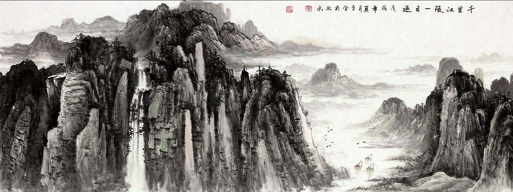
时至今日，作为GISer的我们，只得望着一幅幅传世之作，感叹文人艺术家们传神的画技。古人有古人之法，我们能否利用现代工具，制作出写意的水墨风格山水画作？
思路：中国传统的水墨山水画通常以自然山川为主要对象，通过特定的观察角度，结合灵活的着色手法，描绘出拥有深厚感和层次感的壮阔山水景观。在GIS工具中，利用合适的高程数据，通过一定的渲染方式，就可以在某种程度上呈现中国传统水墨山水画中的笔墨感和立体感。ArcScene是ArcGIS软件桌面系统3D分析扩展模块的一部分，是一个可以展示三维透视场景的优秀平台。
主要工具和材料
制作流程
1. 基础数据准备
基础数据包括高分辨率DEM栅格数据（空间分辨率30m即可），矢量点数据（制作红日）以及河流水系矢量数据。其中，需要注意的是，DEM数据尽量选择海拔起伏较大的多山地区，便于分层设色、制图美观等；点数据可以在ArcGIS中制作，可以画多个点，以便在角度调换时视野中有点存在；河流矢量数据可选，河网无需密集分布。
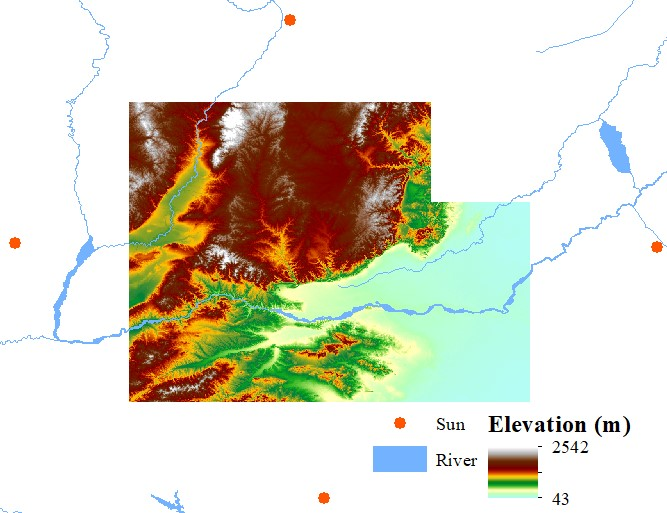
图1 基础数据
2. ArcScene 3D模型制作
将上述基础数据导入到ArcScene中，此时各个图层均为扁平图。然后对各个图层设置属性（图2）：
（1）在“Base Heights”选项卡中选中“Floating on a custom surface”，将路径设置为导入的DEM数据；
（2）注意更改单位转换系数，根据DEM数据投影确定，如不进行偏移设置，则进行下一步；
（3）切换至“Rendering”选项卡，修改栅格图像质量，可以调到最高，否则栅格数据分辨率将会降低，影响制图质量。
（4）适当设置点图层的size和color。
效果图如图3所示，3D模型已构建完成，此时还未呈现水墨质感。
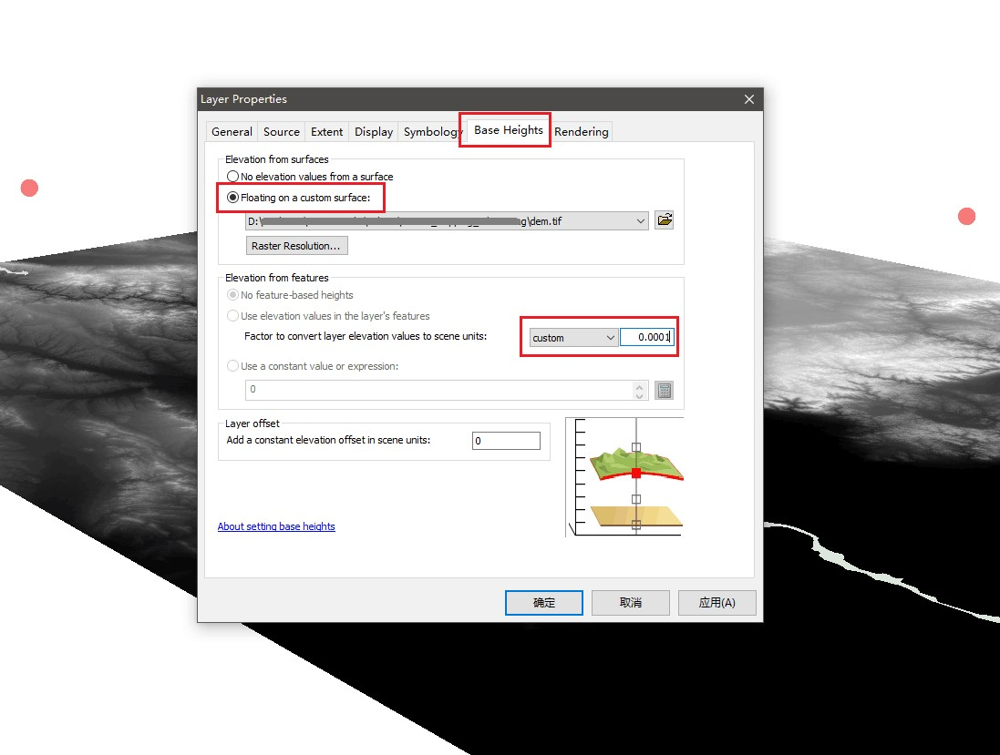
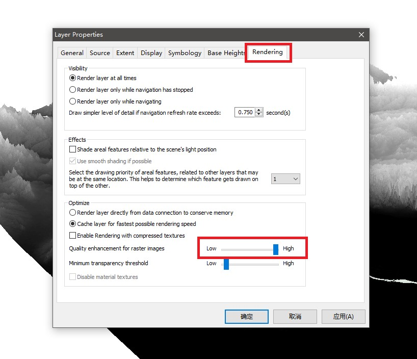
图2 图层属性设置
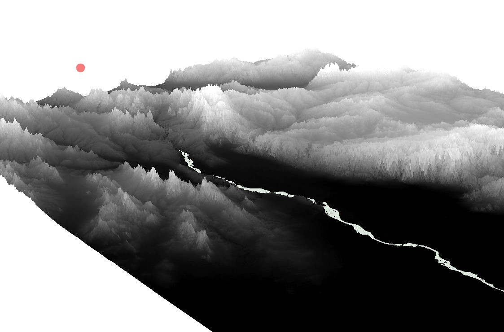
图3 初步3D数字高程模型
3. 图层着色
图层着色是将3D模型呈现出水墨风格的重要步骤，该步骤主要着色的对象为DEM数据。流程如下：
（1）选择合适的角度，最好有远眺的视角；
（2）打开属性设置中的“Symbology”选项卡，更改Color Ramp为“白->黑”渐变色，更改Stretch type，使3D模型明暗适中，如图4，效果如图5，此时已有水墨质感和立体感；
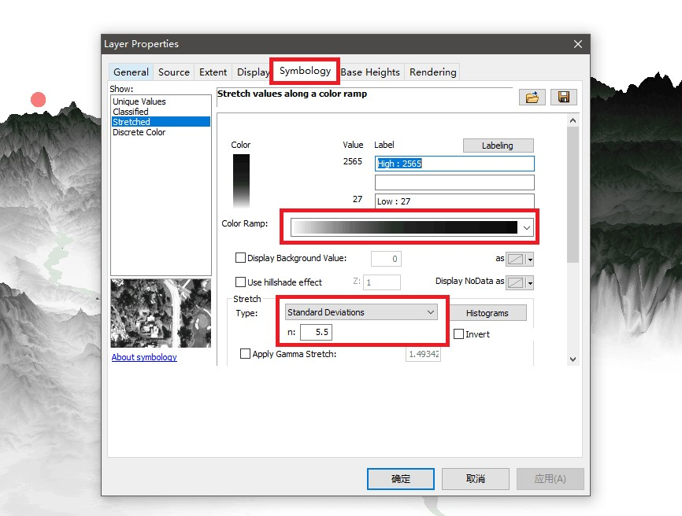
图4 颜色风格与明暗调节
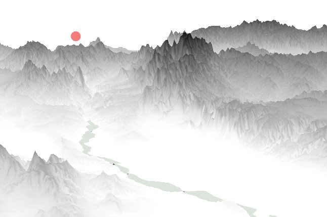
图5 明暗调节后的效果
（3）部分着色，体现不同的元素（如山腰处呈现浓郁的绿色，山脚处呈现淡淡的土黄色等）。打开“Labeling”选项进行设置，将“Number of Interval”设置为16（类别大于10为宜），点击“Generate”生成分层颜色列表；在颜色列表中稍微修改某一层的颜色，注意调动幅度不宜过大。
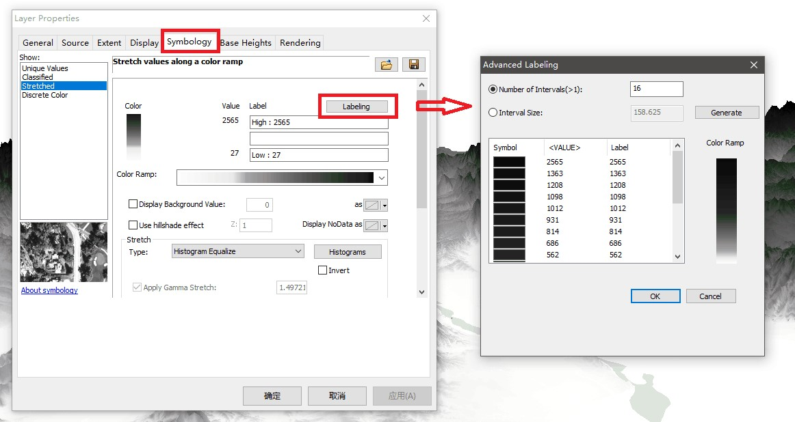
图6 分层着色
色彩微调方式：双击颜色条，点击“More Colors…”，在原本的颜色基础上进行细微改动，通常选择RGB颜色进行修改，便于控制。
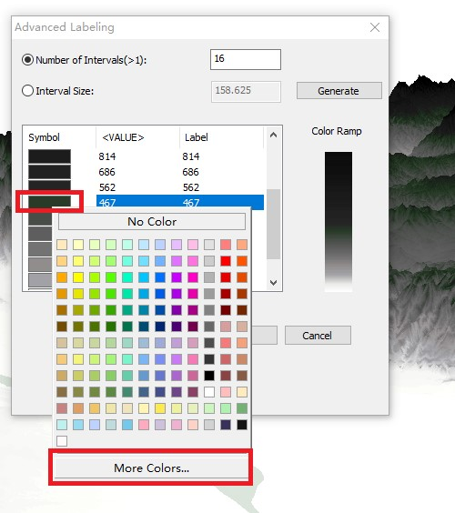
图7 色彩微调
通过以上步骤，简单的水墨风格山水画便制作完成，想要得到更精美的画作，还需要耐心尝试与调色。尽管花了很大功夫，但水墨山水画仍显单一，毕竟作画素材简陋，毕竟水墨画博大精深，毕竟我们不是艺术家，毕竟……谨表敬意！
下图是利用本方法制作的多种风格的水墨山水画，敬请欣赏~

云雾山峦
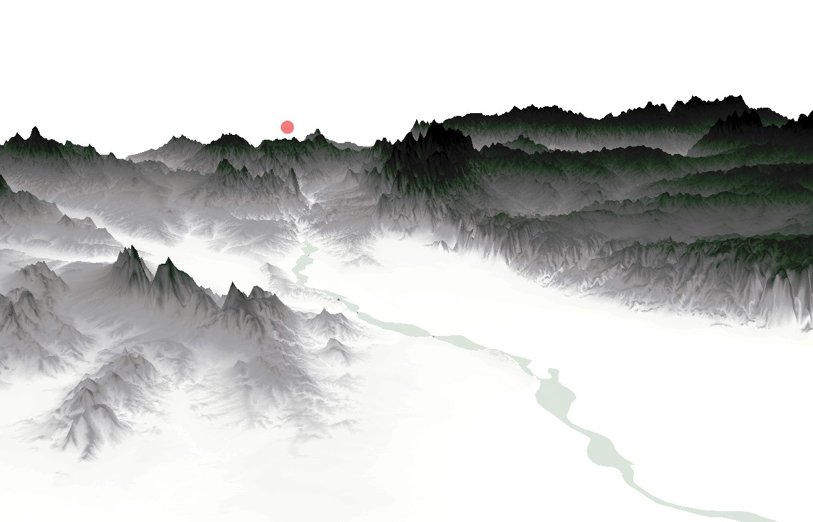
绿水青山
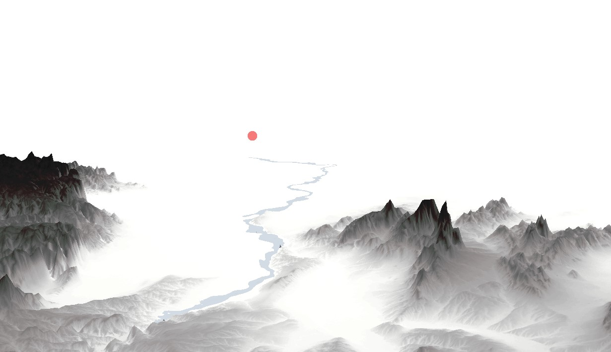
长河落日圆
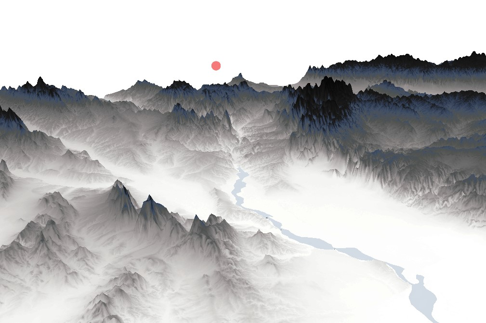
远看山有色
@斩之浪（新浪微博）
Fighting, GISer!
最新博文